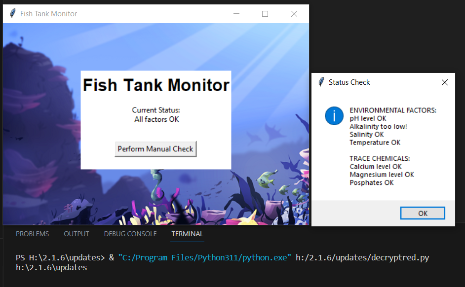
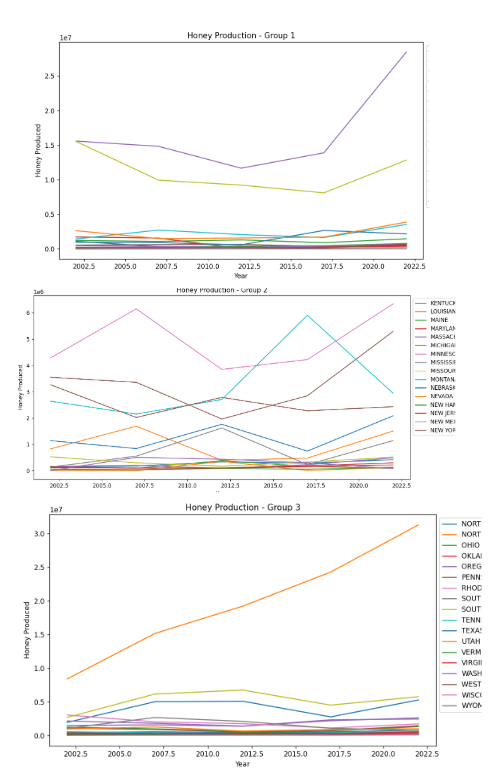

Joaquin's Portfolio
Yogurt Bowl Maker

This was a project in which the user was able to input weather or not they wanted to have it in their bowl, if they did, the turtle would draw it onto the yogurt
Indiana Banana

We created a minion that had to jump over spikes and different obstacles in order to reach the final level where a golden banana was awaiting
Children's Hospital ECard
We created an ECard for a children's hospital where the user is asked if they want to hear a joke, if yes, a riddle was displayed on the screen, then you could press "a" to see the answer
Fishtank
We debugged the code so that we were able to run it without any unexpected errors
Cat finds love
We created a scratch project that was basically a game but a story too. A bear woke a cat up from sleep and took him through a journey to find the love of his life
Rover Data

We figured out that it was Rocky Mountains since the data for the gyroscope matched the rocky terrain and the data for the temperature made sense that it got abruptly hot. The sound also matches with the slow but constant winds
3.2.4
In this project we used matplotlib and pandas to plot graphs of honey production over the years in each state. We used these graphs to draw conclusion of the health of the bees and production of honey.